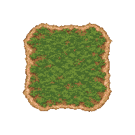
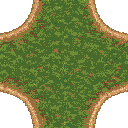
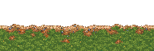
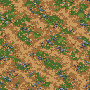
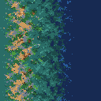

ערכת חיבורי נהר — חלקים להרכבה
16 מועמדים לגדות בגודל 64×64: ארבע גדות ישרות, ארבע פינות חיצוניות, ארבע פינות פנימיות, מילוי ושלוש חלופות לגדה הצפונית. בנוסף: קרקעית רדודה ומעבר לעומק. האמנות נוצרה ב־imagegen; הייבוא, החיתוך וההרכבה נעשו בכלי הפרויקט.
בדיקת הליכה ומים במנוע המשחק — דורש את שרת הפיתוח המקומי.
זו בדיקת חיבור, לא מפה חדשה. פריסת העומק משמאל לימין כאן מדגימה חומר בלבד; היא אינה חישוב עומק סביב כל פינה. פני המים הם שכבה נפרדת, והצמחייה והקצף אינם מצוירים בתוך הגדות.
ממצאי ההרכבה
נוצרות צורות עם פינות קעורות וקמורות מאותם חלקים, אבל עדיין נראים חזרות של כתמי אדמה ושינויים בעובי השפה. האבנים הבולטות הוסרו מגרסת הבסיס החדשה; וריאציות הגדה הנוספות עדיין דורשות התאמה אליה. בדיקת גבולות האלפא מתועדת בקובץ הייבוא; עדיין יש סטיות שפה לליטוש. המספר הוא כלי אבחון, לא אישור איכות; הערכה עדיין אינה מוכנה להחליף את מפת המשחק. שני מצבי מגע אלכסוני בלבד אינם נתמכים בשלב זה.
גדות ופינות חיצוניות

לוח 192×192, מחולק ל־3×3. לחיצה פותחת את מקור הציור.פינות פנימיות

לוח 128×128, מחולק ל־2×2.חלופות לגדה ישרה

שלוש חלופות חומר; צריך להשוות את נקודות החיבור לפני החלפה חופשית.החלקים בגודל המקורי
קרקעית רדודה

קרקעית סטטית, ללא גלים או קצף מצוירים.מעבר מרדוד לעמוק

כיוון אחד כרגע. פינות עומק, חזרות והחיבור לקרקעית עדיין דורשים בדיקה.המשך העבודה ללא יצירת תמונות
מקורות הציור נשמרו. אפשר להמשיך ברישום החלקים, בדיקת תפרים, בחירת וריאציות ובניית תצוגה במנוע. תיקון אמנותי של שפה או הוספת משפחת חוף אחרת עדיין עשויים לדרוש ציור נוסף; אין כאן הבטחה שהמקורות כבר מכסים כל מצב.
הנחיות היצירה · הנחיות החלופות · ייבוא וממצאי חיבור · מים וחומרי העולם